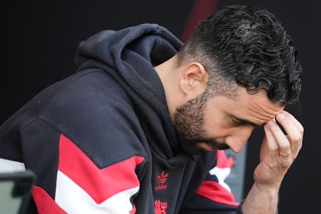

Premiership Predictions 2026-27 - Current Standings
Reminder: Your score is the sum of the differences between your prediction and the actual finishing position.
Premier League Table
Final Standings
Entries
Table From Last Year
- Arsenal
- Man City
- Man United
- Aston Villa
- Liverpool
- Bournemouth
- Sunderland
- Brighton Hove
- Brentford
- Chelsea
- Fulham
- Newcastle
- Everton
- Leeds United
- Crystal Palace
- Nottingham
- Tottenham
- West Ham
- Burnley
- Wolverhampton